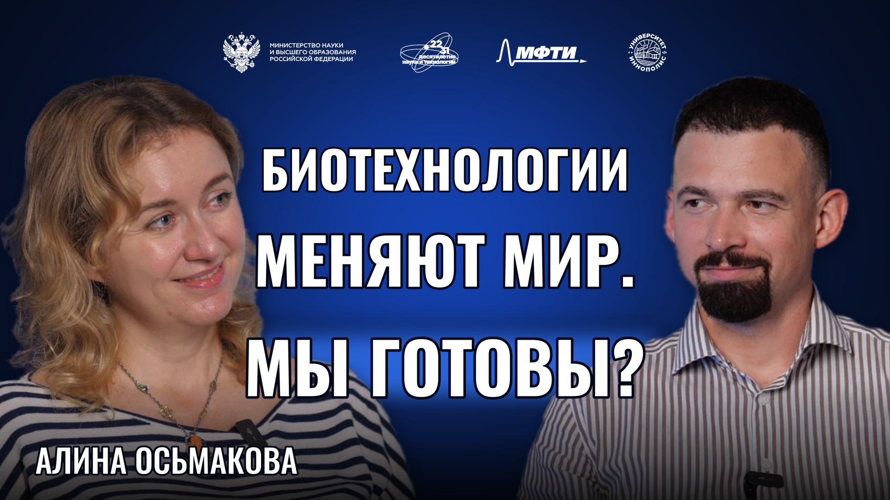

Алина Осьмакова
Заместитель директора по стратегическим коммуникациям и экспертному прогнозированию ФИЦ биотехнологии РАН

01О герое
Алина Осьмакова — специалист по научным коммуникациям и популяризации биотехнологий. Работает заместителем директора по стратегическим коммуникациям и экспертному прогнозированию ФИЦ «Фундаментальные основы биотехнологии» РАН и руководит музейным комплексом «БИОТЕХ» на ВДНХ. В проектах музея сложные темы биотехнологии и биоэкономики представлены в просветительском и профориентационном формате.
02Ключевые тезисы
- Команда ФИЦ создала музей «БИОТЕХ» на ВДНХ, чтобы посетители могли познакомиться с технологиями, которые вызывают у них опасения, и задать вопросы о том, как они работают.
- У каждого региона своё сырьё для биоэкономики. Осьмакова приводит три примера: отходы лесопереработки, отходы рыбных хозяйств и зерно. Выбор направления зависит и от того, какие специалисты уже работают в регионе.
- ИИ ускоряет работу с информацией, но у исследователя от этого может стать больше задач. Какую задачу решать и сколько времени ей уделить, по мнению Осьмаковой, должен определять сам человек.
- После посещения научного музея школьник может заинтересоваться профессией или понять, что ему ближе другое дело. Осьмакова считает оба результата естественными.
03Возьми с собой
Что применить
Чтобы объяснить биоэкономику на местном примере, начните с одного предприятия. Что остаётся после переработки рыбы, леса или зерна? Кто в регионе умеет работать с этим сырьём?
Цитата из выпуска
Искусственный интеллект должен подчиняться нашему темпу, а не наоборот.
— Алина Осьмакова